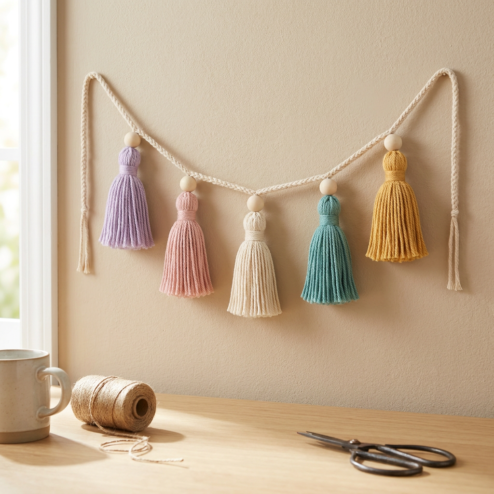

Free Team Crafties pattern • Yarn décor
Mini Tassel Garland
A polished beginner yarn décor pattern for five tidy tassels on a hanging cord, with wrap counts, spacing, trimming, bead options, and safe display notes.
Professional redo
Pinterest-style finished project
Finished project
This version uses five neat tassels, a soft hanging cord, and optional wooden beads so the garland looks intentional instead of like leftover scraps. Keep the tails short and hang it as décor only.
New finished imageMaterials
Terms and measurements
Before you start
Use smooth yarn or cotton cord if you want crisp tassels; fuzzy or kinked scrap yarn gives a more rustic look.
Make one sample tassel first, trim it, then use it as your size guide for the rest.
This is wall décor only: not for cribs, strollers, pets, sleep spaces, doorways, or anywhere a loop can catch.
Make the tassels
Assemble the garland
Finishing
Beginner help
Care and safety
💜 Kindness twist: Choose five colors for five tiny wishes, then tie a small removable note to the hanger before gifting.
Pattern note
This is a desk-checked beginner yarn décor pattern. Measure, trim, and tug-test every tassel before hanging so the finished garland matches the photo and stays neat.
{kind=link}